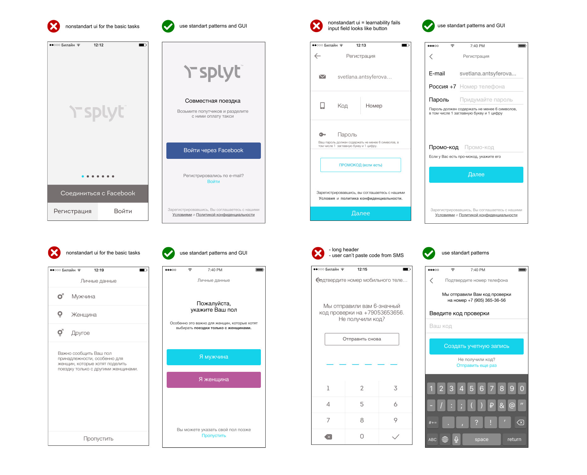

Portfolio / Splyt App UX
Splyt is the largest mobility B2B marketplace. It started as a ride-hailing mobile app.
My Role
I was asked to make the UI audit of Match Cards and Onboarding to improve the user experience of these parts. Based on interviews I have conducted, as well as my experience, I identified several problems and proposed solutions.
What I did
- Interviews
- User Flows
- Wireframes
- Prototyping
Splyt approached me with an early version of the app. It was far from a smooth user experience but proved helpful in understanding the user flow of the project.
I found 10 respondents (mobile taxi and ride-sharing apps users) and asked them to install the Splyt app and comment on their actions. We started with the onboarding part of the app. Through conversations and interviews, it became clear that there were incorrect assumptions and misaligned expectations about user behavior.

The main part of the user interface was overcomplicated and time-consuming. All elements were neither balanced nor aligned. As a result user, eye movement through a screen was not obvious and sequential.

I wanted to minimize eye movements, reduce distractions and make the process of finding a new match simple and easy. Users must be able to share a ride quickly and understand UI without explanation. The primary action button must be placed on the area where the user's eyes end up when they finish scanning. Also, I suggested adding more contrast to draw attention.
The first solution I came with was a vertical user feed showcasing all potential matches down the screen. The user starts the path from the top of the screen and moves down with infinite scrolling. This solution allows the user to make more informed decisions because of clean scannable profiles. It is easy for the eye to scan the matches.
Another solution I proposed was 'Card Swipe'. For a user, it could be a familiar experience of dating apps. The process of swiping the match cards feels like a fun game. And every card has more screen real estate to play with or squeeze in the additional content.
Outcome
The onboarding and match card design reached a point of implementation and was well received by the Splyt team. The new app was launched and was constantly improved according to customer feedback. In the end Splyt has been sunsetted as a ride-hailing app but the opportunity to work with the team and the work I performed are still valuable experiences to have undergone.
Anton possesses a winning combination of solid tech skills and business sense. He has an expert knowledge of user behavior, needs and pain.
— Rossano Rolla, De Fonseca
Anton quickly and efficiently achieves his goals thanks to his responsibility, focus on results, deep understanding of user needs.
— Sergey Doroshko, LETO

Anton is a clear expert who has a vast knowledge of UX and demonstrates a deep understanding of users.
— Roman Soroka, KupiVIP

Anton has an excellent eye for design and usability, he is a self-starter and a problem solver.
— Kirill Semkin, Spacebox